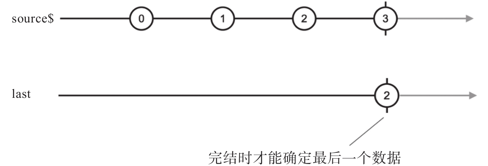

last这个操作符做的事情和first正相反，找的是一个Observable中最后一个判定条件的数据。
下面是一个简单的例子：
import 'rxjs/add/observable/of'; import 'rxjs/add/operator/last'; const source$ = Observable.of(3, 1, 4, 1, 5, 9, 2, 6); const last$ = source$.last();
上面代码中，last$会吐出6然后完结，因为6是source$最后一个数据。
虽然官方文档上只说last支持一个判定函数参数，实际上last和first一样，也可以接受第二个“结果选择器”参数，第三个默认值参数。
下面是一个使用上三个参数的last使用例子：
import 'rxjs/add/observable/of'; import 'rxjs/add/operator/last'; const source$ = Observable.of(3, 1, 4, 1, 5, 9); const last$ = source$.last( x => x < 0, f => f, -1 );
因为source$中不包含任何小于0的数据，所以最后last$吐出的数据是-1。
和first不同的是，last无论如何都要等到上游Observable完结的时候才吐出数据，因为上游Observable完结之前，last也无从知道是不是拿到了“最后一个”数据。
如果上游代码的数据在一段时间上产生，可以很清楚地看出这一点特性，示例如下：
const source$ = Observable.interval(1000).take(5); const last$ = source$.last(x => x % 2 === 0);
在上面的代码中，last$要在第4秒钟才能产生唯一的数据2，可是数据2是上游source$在第3秒的时刻就产生的，因为last只有在source$完结的时候才能确定，上游不会再有偶数产生，这时候才把2传给下游。
图7-3展示的是last的弹珠图。
在熟悉了first和last之后，可能你也发现了一个问题，那就是这两个操作符，还有之前提到的find和findIndex，都只能找到一个数据，如果想要从上游Observable中找到满足判定条件的多个数据，这几个操作符就帮不上忙了。对于需要过滤出多个数据的场景，就需要take一族的操作符了，下一节介绍。

图7-3 last的弹珠图